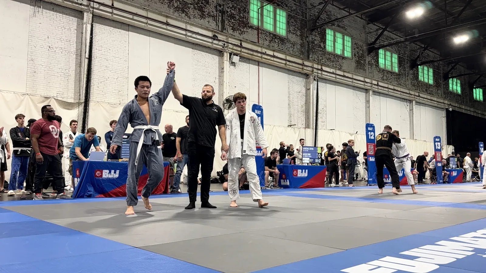
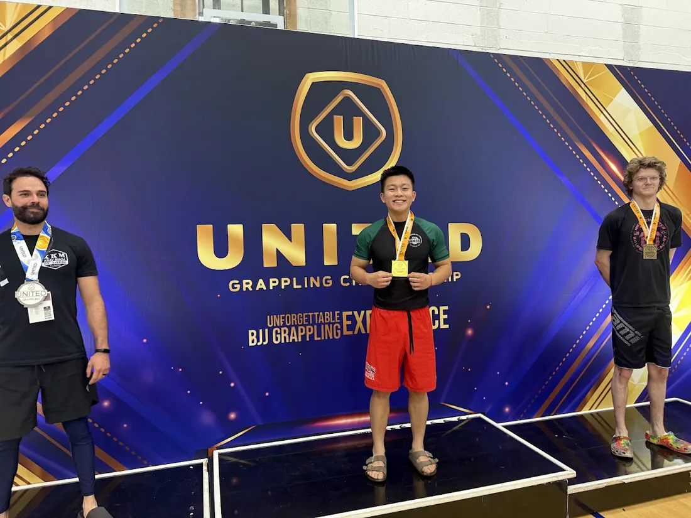
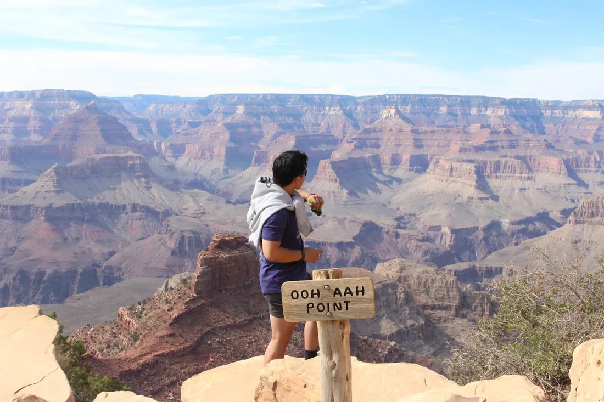

I want to build hardware for places that are hard on hardware.
I'm a mechanical engineering junior at WashU, minoring in computer science and philosophy.
Vacuum chambers in chip fabs, cryostats colder than space for quantum computers, the vibration and g-loads of a launch, a robot cycling a million times. Semiconductors, quantum computing, aerospace and defense, and robotics look like different worlds, but they share one job: design mechanisms that keep working when conditions don't cooperate. That's the engineering I want to do.
My projects so far follow that thread, from a nosecone retention system sized for a 5,000 N parachute snatch load to noise and error-mitigation work on a 156-qubit quantum processor.
Outside of engineering, I train jiu-jitsu, play guitar, get outdoors, build AI tools for my own life, and read philosophy to actually use it.

- Studying
- B.S. Mechanical Engineering · minors in CS and Philosophy
- Class
- 2028 · junior
- Scholar
- QuestBridge National College Match
- From
- Millbrae, California
- Interests
- Semiconductor equipment, quantum hardware, aerospace and defense, robotics
I built a second brain, then built agents to run it
Engineers optimize things, and I started with my own week. Everything I think, plan and read goes into one Obsidian vault, organized with PARA and Zettelkasten. AI agents I wrote in Python sit on top of it, alongside Claude and Codex. They schedule my calendar, file research and keep my daily notes current.
The vault itself: projects, long-running areas like quantum computing, fleeting thoughts and reading notes. I journal on paper, photograph the pages, and AI transcribes them into the week's daily notes.
My own agents, plus Claude, Codex and Antigravity over MCP. This is where I ask for things: "plan tomorrow," "research this," "what did I decide about the payload?"
Google Calendar, Google Health, web and arXiv search, research automations, and a written manual that teaches the agents how my vault works.
Productivity agent
WorkingReads and books my Google Calendar, and searches, writes and appends notes in the vault. 8 tools.
Research agent
WorkingSearches the web, arXiv and Wikipedia, then files a structured note under Research/. 9 tools, with a monthly cap on paid search.
Supervisor agent
BuildingRoutes each request to the right agent, and chains them for jobs that need both.
Python · LangGraph · Gemini 2.5 Flash · Google Calendar API · Obsidian
On the mat
I train Brazilian jiu-jitsu and Muay Thai, and I lift weights regularly. I'm a white belt in jiu-jitsu, working toward my blue belt. Long term, I want my black belt.
I also run WashU's Brazilian Jiu-Jitsu Club. I was treasurer first, and now I'm president. We grew regular membership by recruiting at the activity fair and through word of mouth. We also set up standing tournament funding, so athletes stopped having to ask for money before every event.

Our six-athlete team won Overall Team and Best Academy.
Hobbies
Guitar. I've played guitar for about a year, mostly pop and acoustic songs, and I'm working my way into fingerstyle. My one rule for it: practice every day.
Getting outside. I like to travel, especially on road trips, and to get outdoors whenever I can: hiking, camping and fishing. This summer, my friends and I traveled around the Southwestern United States, visiting places like the Grand Canyon, Monument Valley, Glen Canyon, and Grand Staircase-Escalante National Monument. The photo is from Ooh Aah Point at the Grand Canyon.

Philosophy I actually use
Discipline, hard work and enthusiasm get you 80% of the way.
I minor in philosophy because I want it to change how I live, not just what I can argue. The idea I use most is Plato's theory of Forms: nothing in the physical world is ever a perfect version of what it represents. No matter how round you make a circle, it will never be as round as the true circle you can picture.
It changed how I think about perfection. Nothing I build will ever be perfect: the drawing describes the ideal, and every real part is an approximation of it. So I don't measure myself against perfect. As long as I keep striving toward the true form, I'm doing the best I can.
Explaining it with my hands
I tutor engineering students one on one. I find the exact gap, then explain it with sketches and physical analogies. My students cut homework time from 5–6 hours to 2–3, and passed all 15 exams we prepared for.
On WURocketry, I'm mentoring a new member through CAD, machining and the design process.